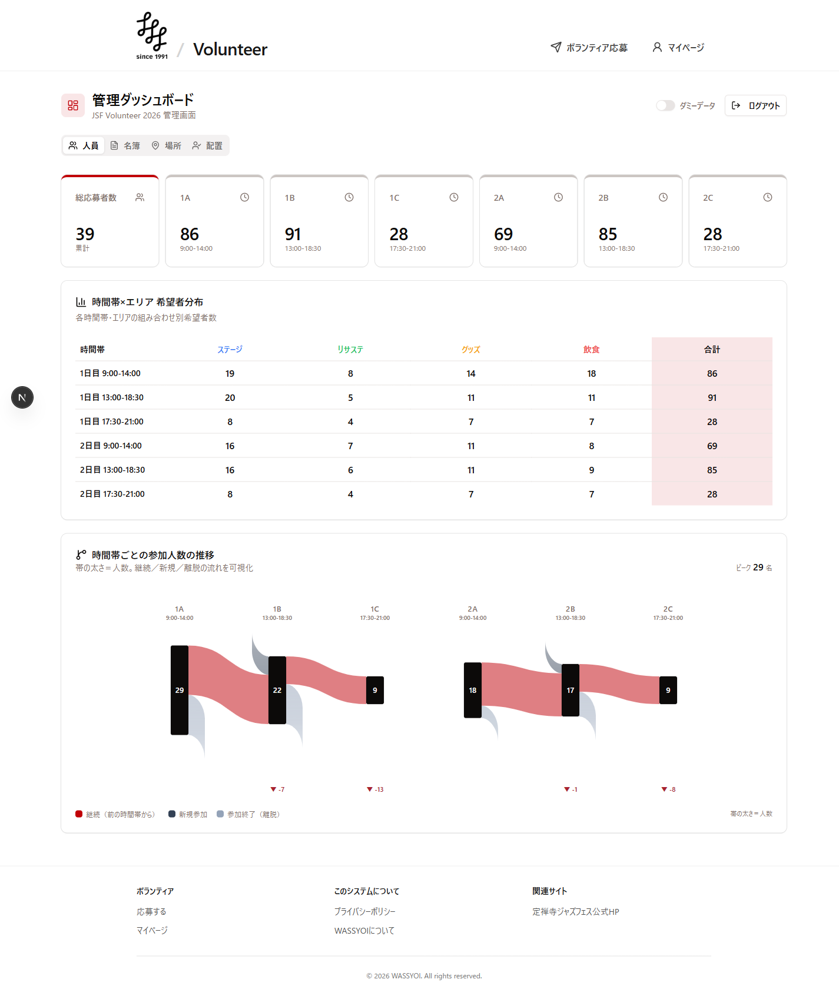

NO.001 — JAZZ / SENDAI
定禅寺ストリートジャズフェスティバル
ボランティア管理
宮城県仙台市・2026.09.12（土）— 09.13（日） / 第35回
2026年 開催に向け運用中
v1 — α release
約 1,000 人のボランティアを、街中 50 拠点に効率配置するための運営システム。 ボランティア募集 → 配置 → 当日運用 → 事後フォローまでを一気通貫で支援し、 「当日の混乱（欠員・再配置・連絡地獄）」を最優先で解消。
時間帯×エリアの希望者分布をリアルタイムで把握できる管理ダッシュボードと、 サンキー図で「継続／新規／離脱」の人の流れを見える化する設計が特徴。
つかっている技術
Next.js 16
TypeScript
Tailwind CSS 4
Radix / shadcn-ui
Supabase
Resend
reCAPTCHA v3
主要ページ

